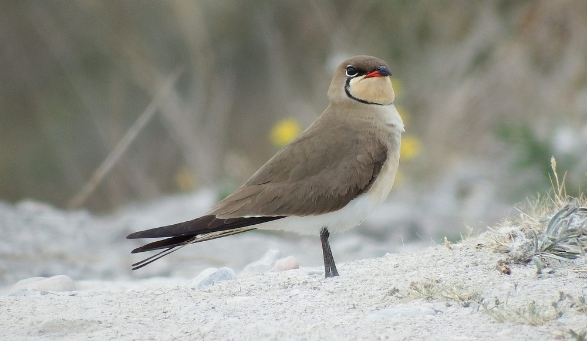

En vol, l'allure de la glaréole à collier est un peu semblable à celle d'une sterne, l'association de sa queue
profondément échancrée, de ses longues ailes pointues et de ses courtes pattes étant un phénomène absolument
unique chez les limicoles. Cependant, les dimensions et la coloration sont différentes. Le dessus du plumage est
brun. La gorge est crème, délimitée par un fin liseré noir qui part de l'oeil. La poitrine présente une teinte
rousse, le ventre est blanc. La face intérieure des ailes porte une large plage marron rougeâtre bordée de noir,
le croupion est blanc, la queue noire. Le bec est court et noir, avec une tache rouge à la base.
Taille : 25 cm
Envergure : 30 à 35 cm
Poids : 70 à 90 g
Ordre : Charadriiformes
Famille : Glaréolidés
Genre : Glareola
Espèce : pratincola
Comme la sterne, elle a un cri rauque et grinçant kik-kik ou kikki kirrik.